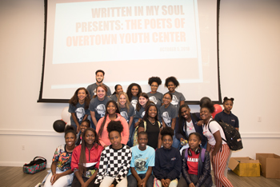
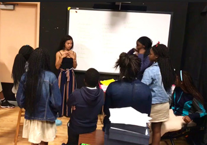
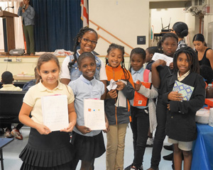

Our Partners
Overtown Youth Center
The mission of the Overtown Youth Center is to inspire and empower youth and families by fostering hope through enrichment services. The main goal of the center is to be an integral part of the community that promotes lifelong success and provides support for inner-city youth and citizens. As a part of the Overtown Youth Center's after school program, Written in My Soul worked with their middle school students in fall of 2018.
Charles R. Drew K-8 Center
Charles R. Drew K-8 Center is a Visual and Performing Arts magnet school in the Liberty City area of Miami. The mission of the school is to help all children become productive members of society by tending to their educational, physical, mental, emotional, and social needs of their students. They provide an innocative, creative curriculum and a positive learning environment. This environment includes opportunities for students to participate in theater, dance, and music programs. Written in My Soul partnered with Charles Drew in fall 2017 and worked with their 6th-8th grade theater students.
Streamline Miami Foundation
Streamline Miami Foundation is a non-profit foundation through which teachers are exploring ways to break social and economic barriers that make it difficult for underprivileged students to achieve academically. Streamline Miami works with schools across Miami-Dade County. However, the base of Streamline Miami exists at Earlington Heights Elementary School in Liberty City. Through Streamline Miami, Written in My Soul was able to work with 3rd-5th graders at Earlington Heights Elementary School in the fall of 2016.